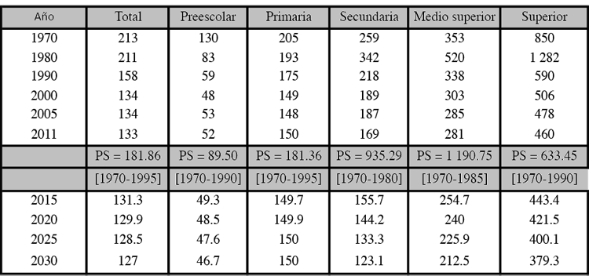

BUENO CREO QUE EN EL KINDER APRENDI DEMASIADAS COSAS Y ESPERO PODER DESPUES ENSEÑAR A MIS HIJOS COMO LO HACIAN
CONMIGO ,amaba vestirme de revolucionario
La educación preescolar es aquella que comprende desde los 3 a los 5 años. No es obligatoria en la mayor parte de países y se basa en la estimulación del desarrollo intelectual, emocional y motriz del niño para que pueda aprovecharlo cuando comience la educación primaria (ya obligatoria) a la edad de 6 años.
También llamada, educación infantil, trata de desarrollar y potenciar las capacidades del niño y prepararles para los aprendizajes que tendrán que realizar más adelante.
tuve muchas experiencias muy bonitas en ese lugar, desde bailables hasta obras de teatro
En la escuela el niño aprende a ser miembro de su cultura y de su país
Este es uno de los objetivos más importantes de la escuela: darle al niño la educación que es común a los miembros de su misma cultura; ofrecerle los aprendizajes básicos de lenguaje, lectura y escritura, de historia, de matemáticas y de la vida en relación con la naturaleza y con su medio social. En el preescolar comienza a formarse la identidad comunitaria y nacional del niño.
